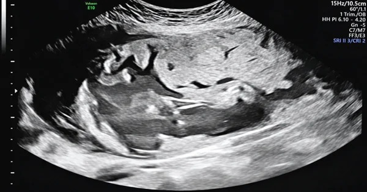
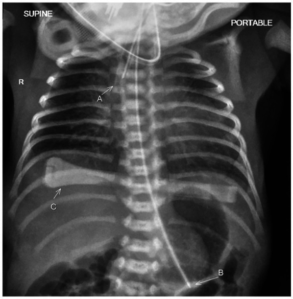
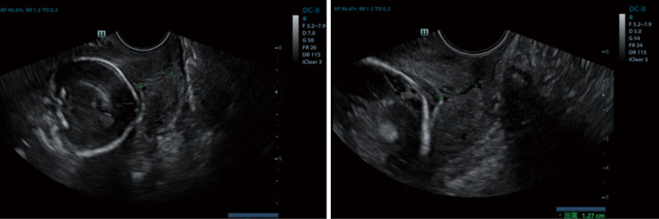

1725 — Vỡ ối non tháng trước 24 tuần trên sẹo mổ lấy thai / Previable PPROM on a prior cesarean scar
Tags: pattern:vo-oi-non-thang pattern:thieu-oi pattern:seo-tu-cung-mong pattern:thai-ky vung:tu-cung-phan-phu vung:manh-oi protocol:SA-thai protocol:MRI-thai score:RMT
Mức chắc chắn (certainty): tổng hợp y văn (literature synthesis) — đoàn hệ 130 thai vỡ ối < 24 tuần (Eur J Pediatr 2026, PMC12855349), đoàn hệ thuốc kháng sinh sau vỡ ối trước khả năng sống (Pregnancy 2026, PMC13344306), phân tích gộp 45 nghiên cứu/286 thai đôi (Int J Gynaecol Obstet 2026, PMC13173602), đoàn hệ 86 ca PPROM < 32 tuần (Arch Gynecol Obstet 2025, PMC12055622) và 1 ca nguyên văn PPROM 28 tuần trên sẹo mổ lấy thai (Case Rep Obstet Gynecol 2026, PMC13591125). Không có thử nghiệm ngẫu nhiên riêng cho nhóm "vỡ ối trước 24 tuần TRÊN SẸO mổ lấy thai" — phần sẹo là suy luận cơ học từ dữ liệu sẹo/đoạn dưới và được ghi rõ như vậy.
1. Tổng quan bệnh học – cơ chế hình ảnh
- Định nghĩa và mẫu số (phải nói trước khi trích số): PPROM (preterm prelabor rupture of membranes) = vỡ ối trước chuyển dạ, trước 37 tuần; previable PPROM = vỡ ối trước 23–24 tuần, tức trước ngưỡng điều trị tích cực sơ sinh. Vỡ ối giữa thai kỳ gặp 0,4–0,7% thai kỳ (Front Pediatr 2024, PMC11776091 — dẫn nguồn tổng quan). Vì mẫu số nhỏ và định nghĩa "previable" thay đổi theo từng khoa sơ sinh (23 hay 24 tuần), mọi tỷ lệ sống phải đọc kèm tuổi thai lúc vỡ và lúc sinh, không đọc trần con số.
- Vì sao sẹo mổ lấy thai làm bệnh cảnh nặng hơn — 3 cơ chế:
- Màng ối không có mạch máu nuôi: một khi đã vỡ, mép lỗ không liền; ối rò liên tục ra âm đạo nên thiểu ối kéo dài chứ không "tự hàn" như vết thương khác.
- Nhiễm trùng đi lên gặp mô sẹo: sẹo đoạn dưới là collagen xơ, gần như không có màng rụng (decidua); vi khuẩn từ âm đạo lên gây viêm màng ối – viêm cơ tử cung tại đúng vùng sẹo mỏng nhất, làm mô sẹo mềm và mất liên tục sớm hơn. Cấy mô học nhau thai cho thấy viêm màng ối (chorioamnionitis) ở 44% các ca PPROM < 32 tuần (PMC12055622).
- Laplace: lực căng thành tử cung tỉ lệ áp lực buồng ối × bán kính; cơn co do viêm + tử cung to dần dồn toàn bộ lực vào vòng sẹo — nên nhóm này vừa dọa vỡ sẹo, vừa dễ vỡ ối hoàn toàn khi chuyển dạ.
- TẠI SAO hình ảnh thấy được (vật lý):
- Siêu âm: nước ối là dịch đồng nhất, echo trống (anechoic) vì âm gần như không bị phản xạ; màng ối là dải echo dày < 1 mm. Lượng ối đo bằng khoang ối lớn nhất (maximum vertical pocket, MVP) và chỉ số ối (amniotic fluid index, AFI): thiểu ối nặng = MVP < 1 cm và/hoặc AFI < 5 cm, không ối (anhydramnios) = không còn khoang ối nào (định nghĩa dùng trong PMC12855349).
- Vì sao thiểu ối gây giảm sản phổi: phổi thai phát triển nhờ dịch phổi tiết ra làm căng đường thở và nhờ khoang ối làm "khung" chống chèn ép; mất ối trước 22–24 tuần (giai đoạn tạo phế nang và nhánh phế quản) → ít phế nang, giảm thể tích phổi, trẻ sinh ra thở máy ngay. Trong đoàn hệ 130 thai: 28% trẻ có tăng áp lực động mạch phổi, 16% loạn sản phế quản – phổi (BPD) nặng, 7% biến dạng cơ – xương (PMC12855349).
- MRI: nước ối T2 rất sáng; cơ tử cung T2 trung bình–thấp; sẹo là dải T2 tối; chỗ mất liên tục cơ chỉ thấy khi mặt cắt vuông góc với vòng sẹo (đúng như bài 1717). MRI không dùng để "đo ối" thay siêu âm, mà để định vị bánh nhau – sẹo – bàng quang khi siêu âm không rõ hoặc nghi nhau cài răng lược (placenta accreta spectrum, PAS).
- Ngưỡng định lượng quan trọng nhất (kết cục thai):
- Thời gian tiềm ẩn (latency = từ vỡ ối đến sinh): trung vị 92 ngày (49–119) trong 130 thai, 94% ca > 14 ngày (PMC12855349). Càng vỡ sớm, latency càng dài — nhưng không có nghĩa kết cục tốt hơn.
- Thai chết lưu (IUFD) 27%, chấm dứt thai kỳ y khoa 8%, sinh sống 65% (85/130); trong số sinh sống 90% xuất viện, 74% không di chứng nặng, 9% tử vong trong viện (PMC12855349).
- Hai yếu tố tiên lượng độc lập: sinh quá non RR 3,51 (1,82–6,76) và latency ngắn RR 8,47 (1,07–66,67) cho "tử vong hoặc di chứng nặng" (PMC12855349).
- Kháng sinh kéo dài latency: sau khi hiệu chỉnh tuổi thai lúc vỡ, nhóm dùng kháng sinh có latency +14,7 ngày (SE 6,86; p = 0,034), sinh ≥ 22 tuần 80,95% vs 15,62%, IUFD 20,63% vs 65,62% (p < 0,001), sống tới xuất viện 49,21% vs 6,25% (p = 0,031) (PMC13344306). Đây là dữ liệu quan sát, không phải RCT — nhưng cùng hướng với gộp 22 thử nghiệm/6.872 ca: kháng sinh giảm viêm màng ối RR 0,66, giảm nhiễm trùng sơ sinh RR 0,67 (PMC13603082).
- Biến chứng mẹ (thai đôi, gộp 286 thai): viêm màng ối lâm sàng 33,5%, nhiễm khuẩn huyết mẹ 7,8%, sốc nhiễm khuẩn 1,6%, cắt tử cung 0,8%; 32,0% thai kỳ không có trẻ nào xuất viện sống (PMC13173602).
- Sẹo và đoạn dưới: đo bề dày toàn bộ đoạn dưới (LUS) và bề dày cơ còn lại (RMT) ở 36–38 tuần, bàng quang nửa đầy, 3 lần lấy trung bình; trong 161 sản phụ chuyển dạ, LUS 2,3 mm / RMT 1,9 mm là điểm cắt tốt nhất cho khiếm khuyết thành tử cung nhưng AUC chỉ 0,60–0,61 (BMC Pregnancy Childbirth 2022, PMC9107280 — chi tiết ở bài 1717). Nghĩa là một mình độ dày sẹo không đủ quyết định; phải cộng bối cảnh vỡ ối – nhiễm trùng – cơn co.
- TẠI SAO nhóm sẹo + vỡ ối lại dễ bị bỏ sót PAS: khi ối đã cạn, bánh nhau áp sát cơ tử cung và các khoang (lacuna) trong bánh nhau trông như "nang" — dễ đọc thành tổn thương khác. Ca nguyên văn: thai 28 tuần 4 ngày, tiền sử 1 mổ lấy thai, ối vỡ, siêu âm thấy thai ngôi mông nằm thấp ở đoạn dưới–eo; MRI xác nhận đoạn dưới mỏng gần như mất cơ, kênh cổ tử cung còn nguyên, mổ lấy thai rạch thành sau rồi cắt tử cung ngay vì chảy máu ồ ạt (PMC13591125). Bài học: vỡ ối + thai nằm thấp + sẹo cũ = phải loại PAS trước khi mổ, không chỉ lo "sinh non".
2. Mẫu hình + chẩn đoán phân biệt theo vị trí (Gamut)
Bốn câu hỏi theo đúng thứ tự khi cầm đầu dò:
- Có ối thật trong buồng tử cung không, hay chỉ còn "vệt ối" giả?
- Màng ối đã vỡ chưa, và vỡ ở đâu (cổ tử cung, eo, trên sẹo)?
- Bánh nhau nằm ở đâu — mặt trước thấp/phủ sẹo (nguy cơ PAS) hay mặt sau/xa sẹo?
- Sẹo còn bao nhiêu cơ (RMT), có phồng/mất liên tục không?
Gamut theo mẫu hình "thiểu ối + sẹo mổ lấy thai":
- Vỡ ối thật trước 24 tuần (bài này): bệnh nhân ra nước, MVP < 1 cm/AFI < 5 cm, không sốt giai đoạn đầu; đầu dò âm đạo thấy mép màng ối cụp, có thể màng ối phồng qua lỗ cổ tử cung.
- Rò ối mạn không triệu chứng (occult leakage): bệnh nhân chỉ thấy "ẩm ướt", AFI giảm dần; không có cơn co; phải phân biệt với rò nước tiểu (creatinin dịch âm đạo cao gấp nhiều lần huyết thanh) và tiết dịch âm đạo.
- Thiểu ối do nguyên nhân thai (không vỡ ối): bất sản/hypoplasia thận hai bên, tắc nghẽn đường niệu dưới (LUTO) — bàng quang to, không có dấu vỡ ối; đây là gamut bắt buộc vì xử trí hoàn toàn khác (đánh giá di truyền, can thiệp bào thai).
- Thiểu ối do bánh nhau: suy bánh nhau/bệnh mạch máu nhau, thai chậm tăng trưởng; thai quá ngày; thuốc (ức chế men chuyển, NSAID).
- Thai đôi: hội chứng truyền máu (TTTS) / "stuck twin" — một thai thiểu ối, một thai đa ối; không phải PPROM dù cùng hình ảnh "một túi cạn".
- Nứt sẹo/dehiscence có màng ối còn nguyên: ối vẫn còn, nhưng màng ối phồng vào chỗ khuyết cơ, thành mỏng, không có nước ối ra ngoài. Ca 28 và 29 tuần được chẩn đoán trên siêu âm trước sinh rồi xác nhận khi mổ (Cureus 2023, PMC10366469).
- Vỡ tử cung thật: mất liên tục cả 3 lớp, thai/bộ phận thai ra ổ bụng, dịch ổ bụng, đau + bụng co cứng; đây là biến cố cấp, không phải "vỡ ối" (bài 1717).
- PAS + vỡ ối: bánh nhau mặt trước thấp, mất dải cơ sáng giữa bánh nhau và bàng quang, lacuna dày, tăng sinh mạch; nguy cơ chảy máu khi mổ (ca PMC13591125).
3. Bảng so sánh phân biệt (ma trận đối chiếu)
| Thực thể (entity) | Hình ảnh điển hình (US/MRI) | Chốt vào (rule-in) | Chốt loại (rule-out) | Gợi ý xác nhận |
|---|---|---|---|---|
| Previable PPROM trên sẹo mổ lấy thai | MVP < 1 cm/AFI < 5 cm; màng ối cụp ở eo; sẹo mỏng (RMT nhỏ); bánh nhau có thể thấp | Bệnh nhân ra nước + ối cạn thật + không có thận/bàng quang bất thường | Có bàng quang to + thận hai bên bình thường → nghĩ LUTO, không phải vỡ ối | Soi âm đạo không thăm khám ngón tay; siêu âm lặp; CRP/bạch cầu |
| Rò ối mạn (occult) | ối giảm dần qua nhiều lần đo; không cơn co; màng ối nguyên | AFI giảm tiến triển + tiền sử "ẩm ướt" | AFI bình thường ổn định nhiều tuần → không phải rò | Đo creatinin dịch âm đạo; siêu âm 2 tuần/lần |
| Thiểu ối do thai (bất sản thận/LUTO) | Không thấy bàng quang (bất sản thận) hoặc bàng quang rất to (LUTO); thận hai bên bất thường | Bất thường thận–đường niệu trên siêu âm | Thận + bàng quang bình thường, ối cạn đột ngột → nghĩ vỡ ối | Siêu âm chi tiết, MRI thai, tư vấn di truyền |
| TTTS/stuck twin | Một thai anhydramnios dính thành, thai kia đa ối; màng ngăn | Hai túi ối chênh lệch rõ + màng ngăn | Một túi ối duy nhất, không màng ngăn → không phải TTTS | Doppler MCA/UV, siêu âm tim thai |
| Nứt sẹo/dehiscence (màng còn) | Màng ối phồng vào chỗ khuyết cơ, thành mỏng; ối còn | Mất liên tục cơ + màng ối còn nguyên + thai sống | Có nước ối ra ngoài + ối cạn → đã vỡ ối | MRI khi siêu âm không rõ; mổ có kế hoạch |
| Vỡ tử cung | Mất liên tục cả 3 lớp, thai ra ngoài, dịch ổ bụng | Thai ngoài buồng tử cung + máu tự do | Thai còn trong buồng, thành cơ liên tục → không vỡ | CT khi huyết động ổn; mổ cấp cứu |
| PAS + vỡ ối | Bánh nhau mặt trước thấp, lacuna, mất dải cơ–bàng quang, tăng sinh mạch | Bánh nhau phủ sẹo + mất dải cơ + lacuna dày | Bánh nhau mặt sau, dải cơ còn rõ → không PAS | MRI (định vị + độ xâm lấn), mổ có chuẩn bị máu |
4. Protocol chụp + hệ phân độ/điểm chuẩn hóa
Siêu âm (modality chính, không bức xạ):
- Đầu dò âm đạo để đo chiều dài cổ tử cung và xem mép màng ối/cổ tử cung; đầu dò bụng để đo MVP, AFI và định vị bánh nhau. Đo RMT/LUS tại sẹo khi bàng quang nửa đầy, mặt cắt vuông góc vòng sẹo, 3 lần lấy trung bình (bài 1717).
- Tần suất: hằng tuần đo lượng ối + xét nghiệm nhiễm trùng trong giai đoạn đầu (khuyến cáo CNGOF, dẫn trong PMC12855349); sau ổn định có thể 2 tuần/lần nhưng bất kỳ đợt sốt/đau/ra dịch hôi → siêu âm + xét nghiệm ngay.
- Không thăm khám ngón tay qua cổ tử cung khi chưa loại trừ nhau tiền đạo; soi âm đạo chỉ khi cần xác nhận ối (thấy vũng ối) và không làm sạch buồng tử cung.
MRI (khi cần, không thường quy):
- Chỉ định: bánh nhau mặt trước thấp/phủ sẹo, siêu âm không phân biệt dehiscence vs PAS, cần bản đồ mổ (đường rạch, vị trí bánh nhau, bàng quang). Ca PMC13591125 dùng MRI để xác nhận đoạn dưới mỏng gần mất cơ và kênh cổ tử cung còn nguyên trước mổ.
- Trình tự: T2 sagittal + axial (giải phẫu), T2 fat-sat (phù/màng), T1 (máu cũ). Không cần gadolinium cho mục tiêu này.
Xử trí theo ngưỡng (protocol, không phải "chờ") — bảng quyết định:
| Tình huống | Việc làm | Ngưỡng/Thời điểm |
|---|---|---|
| Ối cạn < 24 tuần, không nhiễm trùng, thai sống, mẹ đồng ý | Điều trị bảo tồn: kháng sinh kéo dài latency, theo dõi nhiễm trùng, siêu âm hằng tuần, corticoid khi đạt 23–24 tuần | Kháng sinh ngay sau vỡ ối; corticoid từ 23 tuần; MgSO₄ nếu sinh < 32 tuần |
| Nghi/có viêm màng ối (sốt, đau tử cung, CRP tăng, thai nhịp nhanh) | Không trì hoãn: kháng sinh phổ rộng + quyết định sinh | CRP > 20 mg/L ở thời điểm vỡ ối là yếu tố tiên lượng xấu trong đoàn hệ PMC12855349 |
| Nứt sẹo/dehiscence có triệu chứng hoặc PAS nghi ngờ | Mổ lấy thai có kế hoạch tại trung tâm có máu/hồi sức, cân nhắc rạch thành sau và sẵn sàng cắt tử cung | Không chờ đủ tuần nếu đau tăng/máu/ối cạn thêm; ca PMC13591125 mổ ngay khi nhập viện |
| Thai chết lưu hoặc nhiễm trùng mẹ nặng | Chấm dứt thai kỳ (khởi phát hoặc mổ) | Không có ngưỡng tuổi thai — theo tình trạng mẹ |
| ≥ 24 tuần | Chuyển sang phác đồ PPROM "khả năng sống": corticoid, MgSO₄, kháng sinh, theo dõi sản khoa | Sinh tại trung tâm sơ sinh ≥ III |
Kháng sinh — chọn thuốc và cái cần tránh:
- Hiệu quả: giảm viêm màng ối RR 0,66, giảm nhiễm trùng sơ sinh RR 0,67 (gộp 22 thử nghiệm/6.872 ca, PMC13603082); trong nhóm previable, latency +14,7 ngày (PMC13344306).
- Tránh amoxicillin–clavulanate (co-amoxiclav) trong phác đồ latency vì gắn với tăng viêm ruột hoại tử (NEC) ở trẻ non tháng (CNGOF/Cochrane, PMC11297390).
- Không dùng kháng sinh để "kéo dài" khi đã có nhiễm trùng ối rõ — lúc đó kháng sinh là điều trị, và cân nhắc sinh.
- GBS: nếu cấy âm đạo dương và đang chuyển dạ/sắp sinh → kháng sinh dự phòng theo phác đồ; không dùng để kéo dài latency.
flowchart TD
A[Thai < 24 tuần, ra nước, ối cạn] --> B{Xác nhận ối cạn thật?}
B -->|Không: bàng quang to/bất sản thận| C[Gamut thiểu ối do thai: LUTO/bất sản thận]
B -->|Có| D{Có dấu nhiễm trùng ối?}
D -->|Có| E[Kháng sinh + cân nhắc sinh ngay]
D -->|Không| F{Sẹo: màng phồng/mất liên tục cơ?}
F -->|Có, có triệu chứng| G[Mổ có kế hoạch, chuẩn bị máu + cắt tử cung]
F -->|Không| H[Điều trị bảo tồn: kháng sinh, theo dõi hằng tuần]
H --> I{Đạt 23-24 tuần?}
I -->|Có| J[Corticoid + chuyển trung tâm III]
I -->|Không| H
5. Biến thể bình thường và cạm bẫy
- "Khô ối giả" do đo sai: AFI thay đổi theo tư thế, theo lượng nước tiểu mẹ và theo người đo; một lần AFI thấp không chẩn đoán vỡ ối — phải lặp sau 24–48 giờ và đo MVP (ổ ối lớn nhất) vì MVP ít bị ảnh hưởng bởi thai nhỏ.
- Thai nhỏ làm AFI thấp giả: ở thai chậm tăng trưởng, ít nước tiểu thai sinh lý; đừng gắn nhãn "vỡ ối" nếu không có bệnh sử ra nước và không có mép màng ối cụp.
- Siêu âm thấy "màng ối phồng" KHÔNG đồng nghĩa đã vỡ: đó là dehiscence (màng còn, cơ mất liên tục) — xử trí khác hẳn vỡ ối; ca 28–29 tuần trong PMC10366469 được chẩn đoán trước sinh nhờ siêu âm.
- Đo sẹo khi bàng quang căng: bàng quang đầy ép đoạn dưới làm RMT mỏng giả; luôn đo khi bàng quang nửa đầy và ghi rõ tư thế.
- MRI T2: "dải tối" ở đoạn dưới có thể là sẹo, có thể là bánh nhau — phải đọc cùng T1/T2 từng lớp và định vị bánh nhau, không lấy một dải tối làm chẩn đoán.
- Sai lầm "không sốt = không nhiễm": viêm màng ối âm thầm rất thường gặp; CRP có thể bình thường 24–48 giờ đầu. Trong đoàn hệ 130 thai, CRP > 20 mg/L tại thời điểm vỡ ối liên quan kết cục xấu — nhưng CRP bình thường không loại trừ.
- Bỏ sót PAS vì "chỉ là vỡ ối non tháng": ca PMC13591125 cho thấy thai nằm thấp + sẹo cũ + ối vỡ có thể là CIP/PAS, mổ thường quy sẽ chảy máu không cầm; phải định vị bánh nhau trước mổ.
- Cạm bẫy "satisfaction of search": thấy ối cạn là dừng, bỏ qua bất sản thận hai bên hoặc bàng quang to — hai chẩn đoán này đổi hoàn toàn tư vấn.
6. Tự lượng giá — Blind Quiz
Ca 1 — Thai 28 tuần 4 ngày, tiền sử 1 mổ lấy thai, ra nước ối 2 ngày. Nhìn siêu âm trước, mô tả trước.

- Gợi ý lâm sàng: thai phụ 30 tuổi, 1 mổ lấy thai 5 năm trước, ối vỡ, thai ngôi mông nằm thấp.
- Câu hỏi: (1) Lượng ối và vị trí bánh nhau? (2) Ba chẩn đoán phân biệt? (3) Dấu hiệu nào buộc phải mổ có chuẩn bị máu?
Bấm để hiện đáp án (findings + chẩn đoán)
- Dấu hiệu: bánh nhau mặt trước thấp và dày, nhiều lacuna, máu tụ trong bánh nhau, đoạn dưới mỏng; thai nằm thấp trong eo–cổ tử cung.
- Chẩn đoán: PPROM trên nền bánh nhau cài răng lược nghi ngờ (PAS) — vì ối cạn làm bánh nhau áp sát cơ, lacuna nổi rõ; mất dải cơ là dấu chốt.
- Xử trí trong ca gốc: MRI xác nhận đoạn dưới mỏng, kênh cổ tử cung còn; mổ rạch thành sau, cắt tử cung ngay vì chảy máu ồ ạt.
- Nguồn ảnh: Case Rep Obstet Gynecol 2026, Fig. 7 (PMC13591125), CC BY 4.0.
Ca 2 — Sơ sinh 32 tuần sau vỡ ối từ 16 tuần, thở máy ngay sau sinh. Đọc phim ngực.

- Gợi ý lâm sàng: mẹ vỡ ối 16 tuần, AFI 1,8 cm ở 20 tuần, sinh 32 tuần.
- Câu hỏi: Dấu hiệu chính? Vì sao phổi nhỏ? Hai nguyên nhân khác gây phổi nhỏ?
Bấm để hiện đáp án (findings + chẩn đoán)
- Dấu hiệu: lồng ngực hẹp, phổi hai bên giảm thể tích, độ căng phổi kém, ống nội khí quản đúng vị trí; không có tràn khí lớn.
- Chẩn đoán: giảm sản phổi (pulmonary hypoplasia) sau thiểu ối kéo dài — vì mất "khung" dịch ối ở giai đoạn tạo phế nang; trẻ cần HFOV + NO, xuất viện sau 108 ngày và còn hỗ trợ thở không xâm lấn tới 8 tháng.
- Phân biệt: bất sản thận hai bên và LUTO cũng gây phổi nhỏ nhưng có bất thường thận/bàng quang trên siêu âm thai.
- Nguồn ảnh: Front Pediatr 2024, Fig. 1 (PMC11776091), CC BY 4.0.
Ca 3 — Thai đôi 19 tuần, một thai cạn ối. Đọc hình và trả lời.

- Gợi ý lâm sàng: thai đôi, thai A vỡ ối non tháng, theo dõi 2 tuần.
- Câu hỏi: (1) Cổ tử cung bao nhiêu? (2) Thai A còn ối không? (3) Nguy cơ mẹ chính của tình trạng này là gì?
Bấm để hiện đáp án (findings + chẩn đoán)
- Dấu hiệu: cổ tử cung ngắn (13–16 mm) ở 19 tuần; túi ối thai A cạn dần trong khi thai B còn ối.
- Chẩn đoán: previable PPROM một thai trong thai đôi — nguy cơ mẹ: viêm màng ối lâm sàng 33,5%, nhiễm khuẩn huyết 7,8%, sốc nhiễm khuẩn 1,6%, cắt tử cung 0,8% (gộp 286 thai, PMC13173602).
- Điểm cần nhớ: 32,0% thai kỳ không có trẻ nào xuất viện sống — tư vấn phải nói cả khả năng "không cứu được thai nào", không chỉ "sinh non".
- Nguồn ảnh: AME Case Rep 2026, Fig. 2 (PMC13466744), CC BY-NC-ND 4.0 — dùng nguyên bản, không crop/ghép.
Bài liên quan chéo
- 1717 – Vỡ tử cung trên sẹo mổ lấy thai: dấu tiền triệu, ngưỡng đo sẹo & chọn TOLAC
- 1604 – Thai kỳ sau điều trị chửa ở sẹo mổ lấy thai: tái phát, nhau cài răng lược
- 1635 – Vỡ ối non tháng sau can thiệp bào thai: lỗ trocar, ống rò thành tử cung
- 1603 – Vasa previa type II–III: chẩn đoán Doppler & đốt laser qua nội soi thai
- 500 – Tổng quan hệ Vú & Sản Phụ khoa
- 1726 – Thai kỳ sau một ca vỡ tử cung: đánh giá sẹo & thời điểm mổ chủ động
Ảnh
1725_vo-oi-non-thang_US_PMC13591125.jpg— Case Rep Obstet Gynecol 2026, Fig. 7 (PMC13591125), CC BY 4.0.1725_giam-san-phoi_XR_PMC11776091.jpg— Front Pediatr 2024, Fig. 1 (PMC11776091), CC BY 4.0.1725_co-tu-cung-ngan_US_PMC13466744.jpg— AME Case Rep 2026, Fig. 3 (PMC13466744), CC BY-NC-ND 4.0 (nguyên bản).- Nguồn + giấy phép từng ảnh:
images/CREDITS.md; link gốc:sources.md.
Không dùng để chẩn đoán độc lập khi chưa có người hướng dẫn.